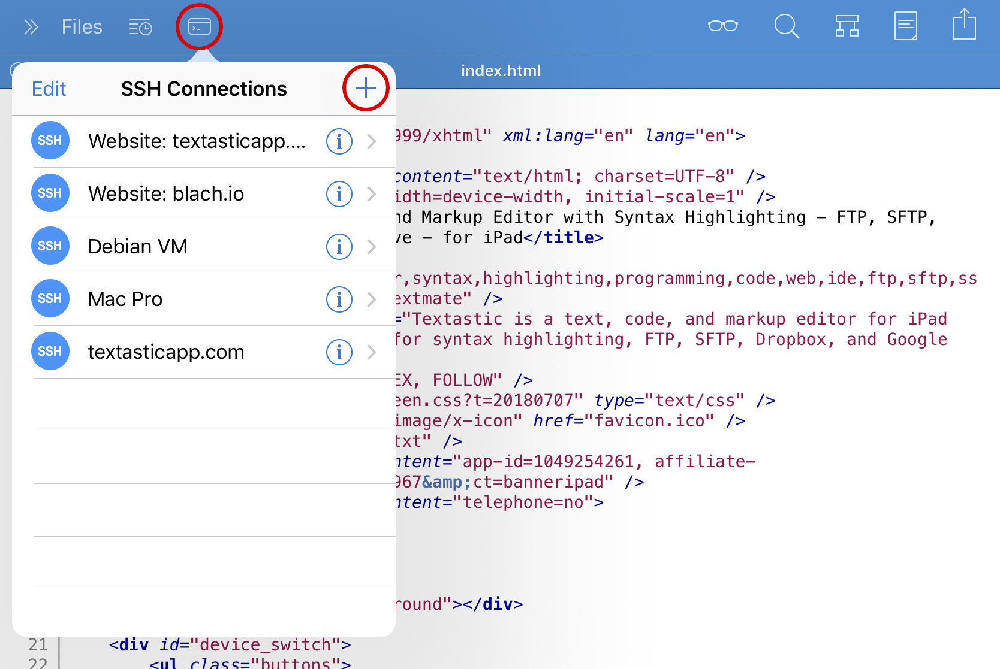
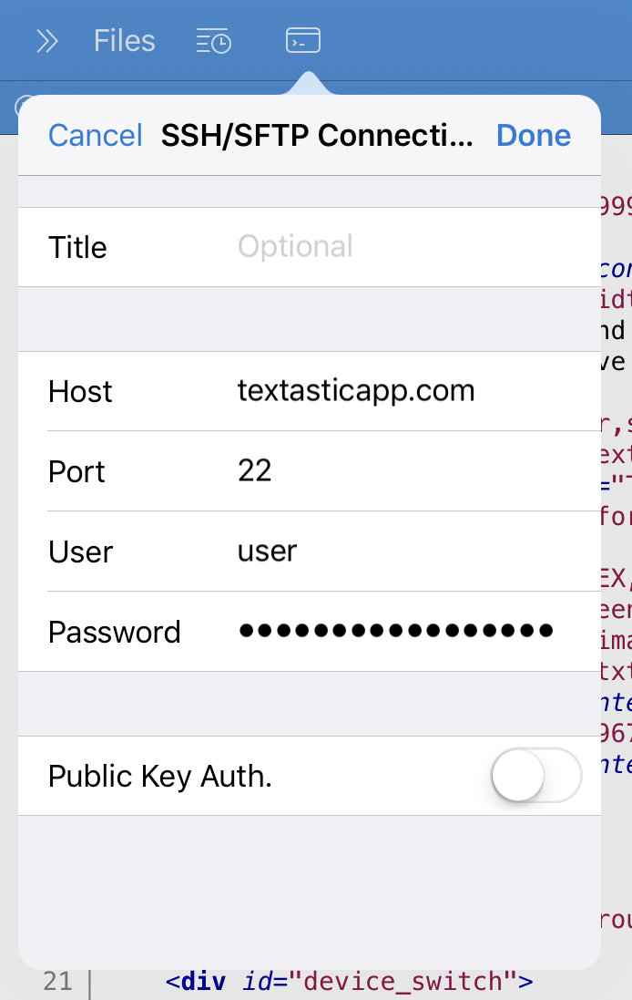
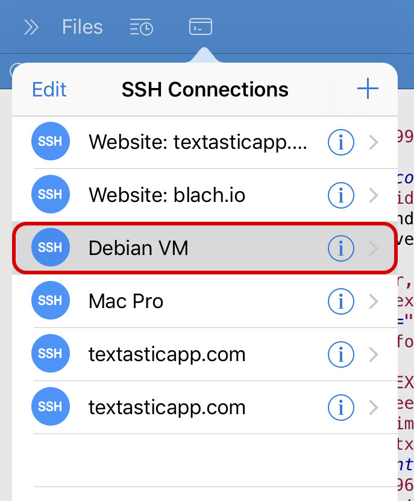
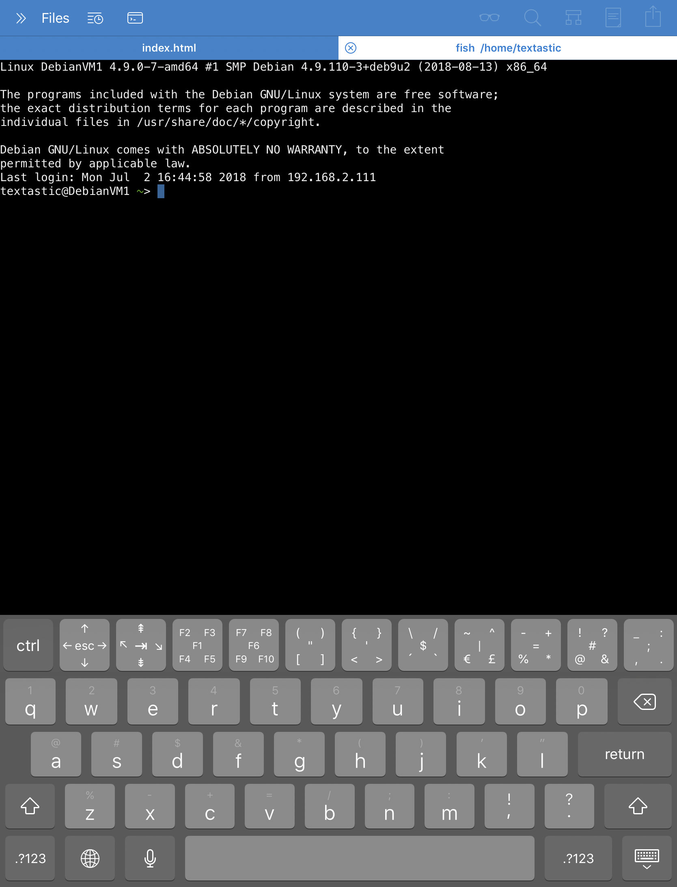
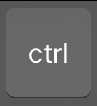
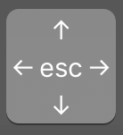
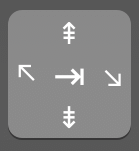
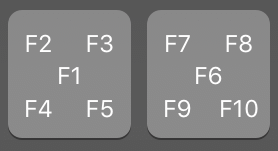
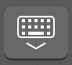

SSH Terminal Connections
Textastic has a built-in SSH client and terminal emulator. You can use it to open SSH terminal connections in tabs. Multiple simultaneous SSH session are supported.
Selecting a SSH Connection
Tap on the Terminal button to show a list of SSH connections.
{kind=link}
If you have already configured SFTP (SSH File Transfer Protocol) connections, they can be re-used for a SSH terminal connection.
If there is no SSH/SFTP connection yet, tap on the + button to add a new one.
{kind=link}
Please have a look at Configure an SFTP (SSH) Connection for details on how to configure the connection.
Connecting to a SSH server
Tap on a SSH connection to open a new terminal tab and connect to the SSH server.
{kind=link}
Once connected, you can use the keyboard to enter commands.
{kind=link}
Special On-Screen Keyboard Keys
When a terminal tab is active, there is a special row of keys above the standard on-screen keyboard.
{kind=link}
{kind=link}
If you want to enter the character in the middle of the button, just tap on the button. If you want to enter one of the other four characters, make sure to swipe over the button in the direction of the character you want to type.
-  Control
Tap on the ctrl key and then on one of the regular characters of the keyboard to send a control character. For example, you can press ctrl and d to send the EOT (end of transmission) character and end the SSH session.
-  Escape and cursor keys
Tap on the esc key to send the Escape character. In most cases, the Esc key also does the same thing as the Alt key.
Swipe in the direction of the arrows to send cursor left, right, up, and down commands.
-  Tab, Page Up/Down, Home, End
Tap on the ⇥ key to send the Tab character. Swipe left and right for Home and End. Swipe up and down for Page Up and Page Down.
-  F1 to F10
Tap on the F1 and F6 button or swipe in the direction of the other F-Keys to send a Function key command.
-  Hide keyboard
The right-most button can be used to hide the keyboard. (only on iPhone)
{kind=link}
{kind=link}
{kind=link}
{kind=link}
{kind=link}
The rest of the buttons can be used to quickly send the special characters displayed on the button.
Shortcuts on an External Keyboard
The following special keys on a hardware keyboard are supported:
Tab, Escape, and Arrow keys
Control modifier key
use Cmd and the arrow keys to send Home (Cmd-left), End (Cmd-right), Page Up/Down (Cmd-up, Cmd-down)
use Cmd-1 to Cmd-0 to enter F1 to F10